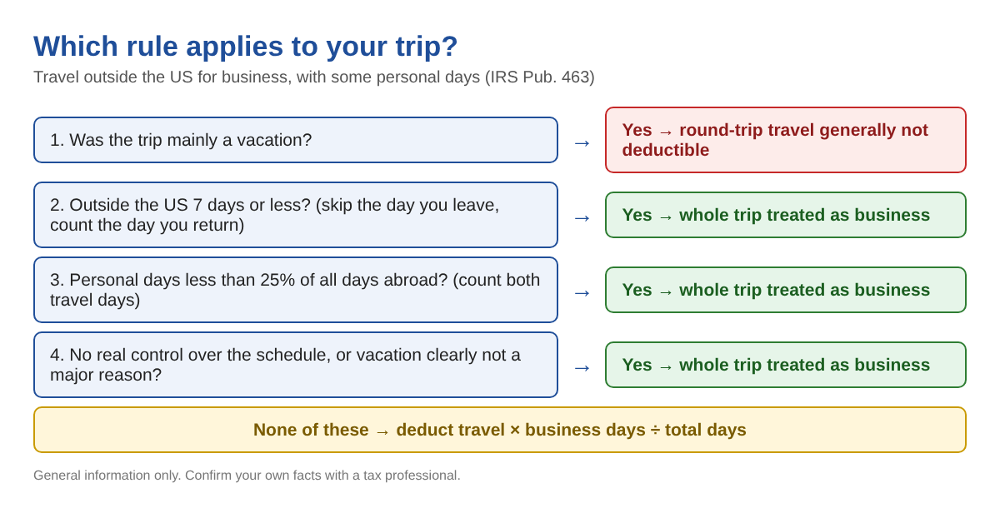
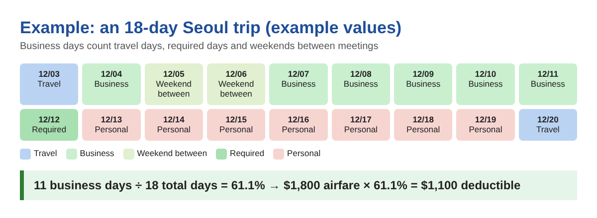
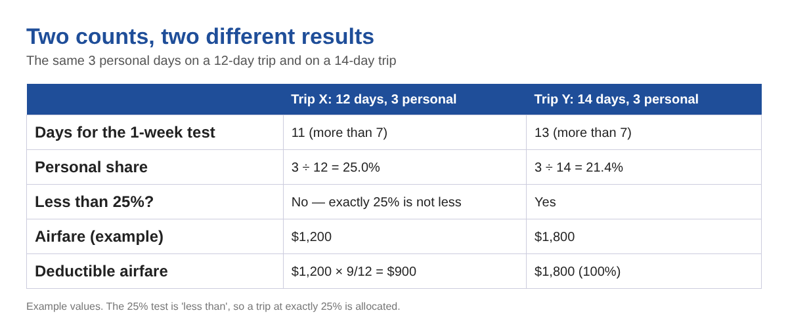

You flew overseas to meet a supplier, attend a trade fair or visit a factory, and then stayed a week longer to see family or travel. When you sit down to record the trip, the airfare is usually the biggest number, and the question is simple: how much of it is a business travel expense? For trips outside the United States, the IRS has specific rules in Publication 463. Some trips are treated as entirely business even with personal days, and others must be split day by day. Getting the count wrong can mean claiming too much, or leaving a legitimate deduction on the table.
This article is general information, not tax or legal advice; confirm your own situation with a licensed tax professional.
Self-employed people and small business owners who travel outside the 50 states and DC for business and add personal time. ("United States" in these rules means the 50 states and the District of Columbia.) Employees who were reimbursed under an employer plan, conventions held outside North America and cruise travel have separate rules and are not covered here.
Publication 463 says a trip outside the United States is considered entirely for business if you meet at least one of four exceptions. If none applies and the trip was primarily for business, you allocate. If the trip was primarily a vacation, the cost of getting there and back is generally a personal expense.

If you need the 25% test or an allocation, you count every day outside the United States and label it. According to Publication 463, business days generally include:

When the trip is primarily for business but no exception applies, the deductible part of the round-trip travel uses this fraction: business days outside the United States divided by the total days of travel outside the United States. For this fraction, the day you leave and the day you return both count as days outside the United States.
| Example trip (example values) | Days for 1-week test | Total days | Personal days | Rule | Deductible airfare |
|---|---|---|---|---|---|
| A: 6-day trip, $1,600 | 6 | 7 | 2 | Week or less | $1,600 |
| B: 14 days, $1,800 | 13 | 14 | 3 (21.4%) | Under 25% | $1,800 |
| C: 18 days, $1,800 | 17 | 18 | 7 (38.9%) | Allocate 11/18 | $1,100 |
| E: 12 days, $1,200 | 11 | 12 | 3 (25.0%) | Allocate 9/12 | $900 |
Trip C does not pass the week test (17 days) and its personal share is 7 ÷ 18 = 38.9%, so the airfare is allocated: $1,800 × 11 ÷ 18 = $1,100. Trip E is the trap: 3 personal days out of 12 is exactly 25%, and the test is "less than 25%", so it is allocated.

Put the date you left the US in B1, the date you returned in B2, personal days in B3 and the round-trip travel cost in B4. Then type:
Days for the 1-week test =B2-B1 Total days outside the US =B2-B1+1 Personal share =B3/(B2-B1+1) Rule =IF(B2-B1<=7,"Week or less",IF(B3/(B2-B1+1)<0.25,"Under 25%","Allocate")) Deductible travel =IF(B2-B1<=7,B4,IF(B3/(B2-B1+1)<0.25,B4,B4*(B2-B1+1-B3)/(B2-B1+1)))
Format B1 and B2 as dates. The formulas assume the trip was primarily for business and that exceptions 1 and 4 do not apply. If you added a side trip, Publication 463 shows another approach: subtract the personal share of the direct round-trip fare from what you actually paid. In its example, $1,850 paid, a $1,250 direct fare and 7 of 18 personal days give $1,850 − ($1,250 × 7/18) = about $1,364.
| Cost (example) | On a business day | On a personal day |
|---|---|---|
| Hotel | Generally a business travel expense | Generally personal |
| Meals | Generally 50% of the cost | Personal |
| Taxi to a meeting, trade fair fee | Generally a business travel expense | Generally personal |
| Spouse or family member's ticket | Generally not deductible | Not deductible |
Does the one-week rule mean any trip under 8 days is fully deductible? If it was primarily a business trip and you were outside the United States a week or less (counted as Publication 463 describes), the trip is considered entirely for business. Personal costs on personal days, such as sightseeing, are still personal.
What if most of the trip was a vacation with one meeting? If the trip was primarily for vacation, the cost of getting there and back is a nondeductible personal expense. Directly related business costs, such as a seminar registration, may still be deductible.
Do I count Saturday and Sunday? Weekends that fall between business days generally count as business days. Weekends after your business ends, when you stay for personal reasons, do not.
Is the result different for Puerto Rico? Publication 463 says Puerto Rico is not considered part of the United States for these travel rules. Check the publication or a professional for that case.
You can download the ready-made Foreign Business Trip Allocator 2026 for free in the Free kit download box below (Excel + PDF guide, no sign-up).
Disclaimer: This article is for educational purposes only and is not tax, legal or accounting advice. It describes general rules from IRS Publication 463 (2025 edition) and does not decide how they apply to you. Rules can change; check the current edition and confirm your own facts with a licensed tax professional. All dollar amounts and dates are examples.